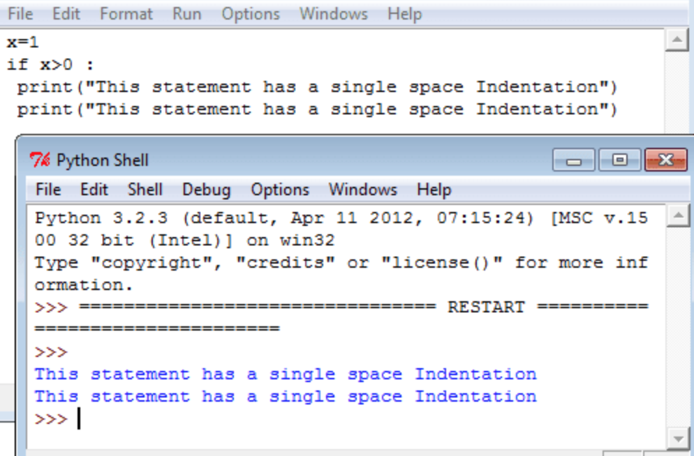

Syntax
A Python program is read by a parser. Python was designed to be a highly readable
language. The syntax of the Python programming language is the set of rules which defines
how a Python program will be written.
Python Line Structure
A Python program is divided into a number of logical lines and every logical
line is terminated by the token NEWLINE. A logical line is created from one or more
physical lines.A line contains only spaces, tabs, formfeeds possibly a comment,
is known as a blank line, and Python interpreter ignores it.A physical line is a
sequence of characters terminated by an end-of-line sequence
(in windows it is called CR LF or return followed by a linefeed and in Unix, it is called LF or linefeed).
Comments in Python
A comment begins with a hash character(#) which is not a part of the string
literal and ends at the end of the physical line. All characters after the #
character up to the end of the line are part of the comment and the Python interpreter
ignores them. See the following example. It should be noted that Python has no multi-lines
or block comments facility.
Joining two lines
When you want to write a long code in a single line you can break the logical
line in two or more physical lines using backslash character(\). Therefore when
a physical line ends with a backslash characters(\) and not a part of a string literal
or comment then it can join another physical line. See the following example
Multiple Statements on a Single Line
You can write two separate statements into a single line using a semicolon (;) character between two line
Indentation
Python uses whitespace (spaces and tabs) to define program blocks whereas other
languages like C, C++ use braces ({}) to indicate blocks of codes for class, functions
or flow control. The number of whitespaces (spaces and tabs) in the indentation is not fixed,
but all statements within the block must be the indented same amount. In the following program,
the block statements have no indentation.
This is a program with single space indentation
This is a program with single tab indentation

Here is an another program with an indentation of a single space + a single tab.
Python Coding Style
-> Use 4 spaces per indentation and no tabs.
-> Do not mix tabs and spaces. Tabs create confusion and it is recommended to use only spaces.
-> Maximum line length : 79 characters which help users with a small display.
-> Use blank lines to separate top-level function and class definitions and single blank
line to separate methods definitions inside a class and larger blocks of code inside functions.
-> When possible, put inline comments (should be complete sentences).
-> Use spaces around expressions and statements.
Keywords Identifiers
| False |
class |
finally |
is |
return |
| None |
continue |
for |
lambda |
try |
| True |
def |
from |
nonlocal |
while |
| and |
del |
global |
not |
with |
| as |
el |
if |
or |
yield |
| assert |
else |
import |
pass |
|
| break |
except |
in |
raise |
|
Python Operators
In computer programming languages operators are special symbols which represent computations,
conditional matching etc. The values the operator uses are called operands.
c = a + b
Here a and b are called operands and '+' is an operator
Python supports following operators.
Arithmetic Operators
Comparison Operators
Logical Operators
Assignment Operators
Bitwise Operator
Conditional Operators
Python Arithmetic Operators
| Operator |
Name |
Example |
Result |
| + |
Addition |
x+y |
Sum of x and y. |
| - |
Subtraction |
x-y |
Difference of x and y. |
| * |
Multiplication |
x*y |
Product of x and y. |
| / |
Division |
x/y |
Quotient of x and y. |
| % |
Modulus |
x%y |
Remainder of x
divided by y. |
| ** |
Exponent |
x**y |
x**y will give x to the power y |
| // |
Floor Division |
x/ y |
The division of operands where the result is the quotient in which the digits after the decimal point are removed. |
Python Comparision Operators
| Operator |
Name |
Example |
Result |
| == |
Equal |
x==y |
True if x is exactly equal to y. |
| != |
Not equal |
x!=y |
True if x is exactly not equal to y. |
| > |
Greater than |
x>y |
True if x (left-hand argument) is greater than y (right-hand argument). |
| < |
Less than |
x<y |
True if x (left-hand argument) is less than y (right-hand argument). |
| >= |
Greater than or equal to |
x>=y |
True if x (left-hand argument) is greater than or equal to y (left-hand argument). |
| <= |
Less than or equal to |
x<=y |
True if x (left-hand argument) is less than or equal to y (right-hand argument). |
Python Logical Operators
| Operator |
Example |
Result |
| and |
(x and y) |
is True if both x and y are true. |
| or |
(x or y) |
is True if either x or y is true. |
| not |
(x not y) |
If a condition is true then Logical not operator will make false. |
Python Assignment Operators
| Operator |
Shorthand |
Expression |
Description |
| += |
x+=y |
x = x + y |
Adds 2 numbers and assigns the result to left operand. |
| -= |
x-= y |
x = x -y |
Subtracts 2 numbers and assigns the result to left operand. |
| *= |
x*= y |
x = x*y |
Multiplies 2 numbers and assigns the result to left operand. |
| /= |
x/= y |
x = x/y |
Divides 2 numbers and assigns the result to left operand. |
| %= |
x%= y |
x = x%y |
Computes the modulus of 2 numbers and assigns the result to left operand. |
| **= |
x**=y |
x = x**y |
Performs exponential (power) calculation on operators and assign value to the equivalent to left operand. |
| //= |
x//=y |
x = x//y |
Performs floor division on operators and assign value to the left operand. |
Python Bitwise Operators
| Operator |
Shorthand |
Expression |
Description |
| & |
And |
x & y |
Bits that are set in both x and y are set. |
| | |
Or |
x | y |
Bits that are set in either x or y are set. |
| ^ |
Xor |
x ^ y |
Bits that are set in x or y but not both are set. |
| ~ |
Not |
~x |
Bits that are set in x are not set, and vice versa. |
| << |
Shift left |
x <<y |
Shift the bits of x, y steps to the left |
| >> |
Shift right |
x >>y |
Shift the bits of x, y steps to the right. |
# Each step means 'multiply by two'
* Each step means 'divide by two'
Conditional Operators
Conditional expressions or ternary operator have the lowest priority of all Python
operations. The expression x if C else y first evaluates the condition, C (not x);
if C is true, x is evaluated and its value is returned; otherwise, y is evaluated
and its value is returned.
Precedence
Import
Python code in one module gains access to the code in another module by the
process of importing it. The import statement is the most common way of invoking
the import machinery, but it is not the only way. Functions such as importlib.import_module()
and built-in __import__() can also be used to invoke the import machinery.
The import statement combines two operations; it searches for the named module,
then it binds the results of that search to a name in the local scope. The search
operation of the import statement is defined as a call to the __import__() function,
with the appropriate arguments. The return value of __import__() is used to perform
the name binding operation of the import statement. See the import statement for the exact
details of that name binding operation.
A direct call to __import__() performs only the module search and, if found,
the module creation operation. While certain side-effects may occur, such as the
importing of parent packages, and the updating of various caches (including sys.modules),
only the import statement performs a name binding operation.
When calling __import__() as part of an import statement, the standard builtin
__import__() is called. Other mechanisms for invoking the import system (such as importlib.import_module())
may choose to subvert __import__() and use its own solution to implement import semantics.
When a module is first imported, Python searches for the module and if found, it
creates a module object [1], initializing it. If the named module cannot be found,
a ModuleNotFoundError is raised. Python implements various strategies to search for
the named module when the import machinery is invoked. These strategies can be modified
and extended by using various hooks described in the sections below.
Changed in version 3.3: The import system has been updated to fully implement the
second phase of PEP 302. There is no longer any implicit import machinery - the full
import system is exposed through sys.meta_path. In addition, native namespace package
support has been implemented
If you want to know more about the import system in python please refer This site